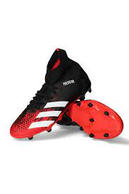
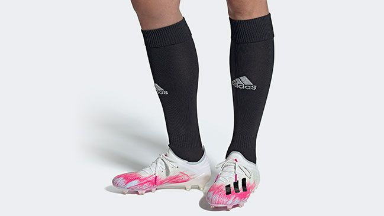
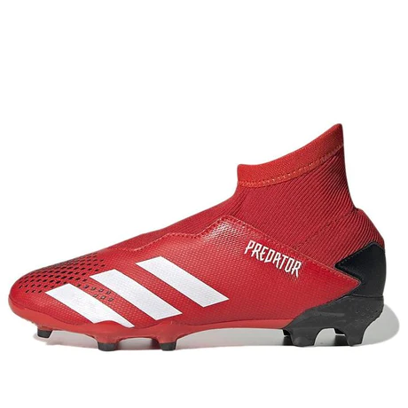

• Originales
PREDATOR 20.3 FG
Precio habitual Q890.00
Este producto se encuentra en adidas y en ningún otro sitio.
Tallas que ofrecemos
| 28 1 / 2 | 29 | 30 | 30 1 / 2 |
| 31 | 31 1 / 2 | 32 | 38 |
No estás engañando al sistema. Simplemente manipulas las reglas. Encuentra tu ventaja competitiva y transforma tu juego con el totalmente renovado calzado adidas Predator. Este calzado de fútbol sin cordones presenta un diseño con exterior textil de corte medio que sujeta tu tobillo. Elementos en relieve sobresalen en el empeine para darle más curva al balón. Toma el control del partido con el Calzado de Fútbol Predator Mutator 20.3 para terreno firme